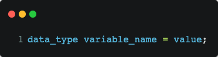
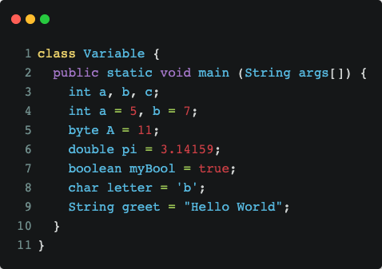

Java variables
February 28, 2022
In this section, we will learn about variable types in Java. Variable is the name of a memory location. There are three types of variables: local variables (also known as local variables), instance variables and static variables.
All variables must be declared before they can be used. The basic form of a variable declaration is as follows:
In explanation, data_type is a data type of Java, variable_name is the name of the variable and value is the value assigned to the variable. To declare more than one variable with a specific type, you can use a comma-separated variable list. Here is an example of valid Java variable declaration and initialization:
Local Variable
- Variables are declared in methods, constructors, or blocks.
- Variables are created when the method, constructor, or block is entered, and the variable is destroyed when the method, constructor, or block terminates.
- The access modifier may not be used for local variables.
- Local variables are only visible in the declared method, constructor, or block.
- Local variables are implemented internally.
- There is no default value for local variables, so local variables should be declared and an initial value assigned before use.
Instance Variable
- Instance variables are declared within a class, but outside a method, constructor or any block.
- Instance variables hold values that must be referenced by more than one method, constructor, or block.
- Access modifiers can be provided for properties.
- Instance variables are visible to all methods, constructors, and blocks in the class. However, visibility for subclasses can be provided to these variables with the use of an access specifier.
Static Variable
A static variable is common to all the instances (or objects) of the class because it is a class level variable. In other words you can say that only a single copy of static variable is created and shared among all the instances of the class. Memory allocation for such variables only happens once when the class is loaded in the memory.